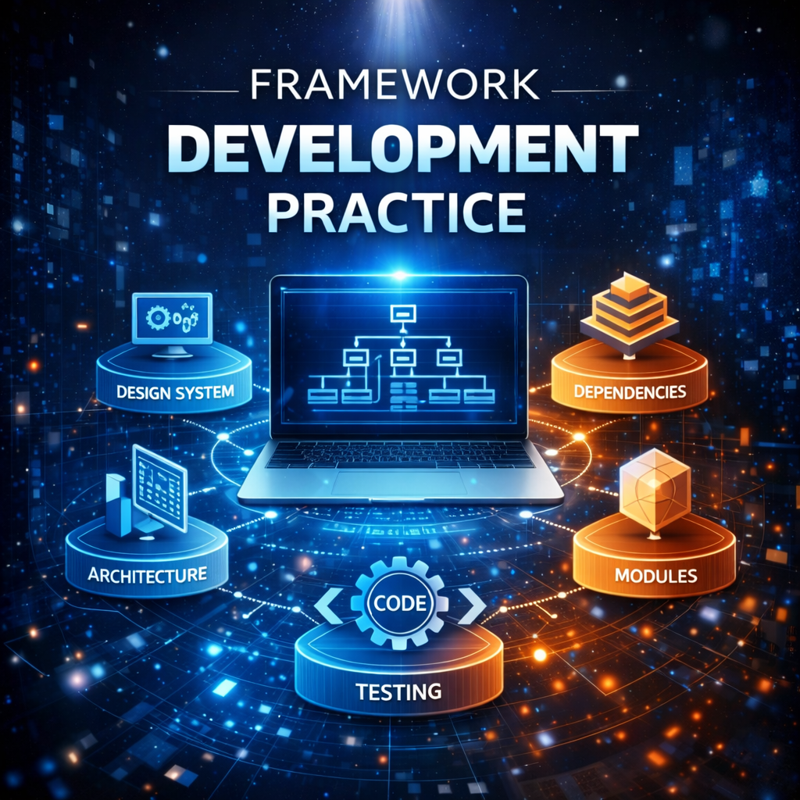

5 Framework Development Practice

5.1 从手动实现到框架开发
从一次性脚本迈向成熟框架，是软件工程中的重要思维转变。第四章中的代码主要用于教学与理解，虽能完成特定任务，但在构建多类型、复杂逻辑的智能体应用时，很快会暴露出扩展性瓶颈。
框架的本质在于提供一套经过验证的规范：将智能体共性的重复工作（如主循环、状态管理、工具调用、日志记录等）进行抽象与封装，使开发者在构建新智能体时，能够聚焦于核心业务逻辑，而非底层通用实现。
5.1.1 为何需要智能体框架
在实战之前，需先明确为何使用框架。相较于直接编写独立智能体脚本，框架的价值主要体现在以下方面：
- 提升复用性与开发效率：框架通常提供通用的 Agent 基类或执行器，封装核心运行循环。无论 ReAct 还是 Plan-and-Solve，都可基于标准组件快速搭建，避免重复实现。
- 实现解耦与可扩展性：健壮系统应模块化设计，框架促使关注点分离：
- 模型层（Model Layer）：负责与 LLM 交互，便于替换不同模型。
- 工具层（Tool Layer）：统一工具定义、注册与执行，新增工具不影响其他模块。
- 记忆层（Memory Layer）：管理短期与长期记忆，可灵活切换策略。 这种设计使系统具备高度可扩展性，组件升级成本低。
- 标准化复杂状态管理：真实的长时运行智能体需应对上下文限制、历史持久化与多轮状态跟踪。框架提供通用而稳定的状态管理机制，避免重复造轮子。
- 简化可观测性与调试：通过内置回调与事件机制（如关键生命周期节点触发日志或上报），可系统化追踪智能体行为，比手动打印更高效可靠。
因此，从手写实现迈向框架化开发，不只是代码组织的升级，更是构建复杂、可靠、可维护智能体应用的必经之路。
5.1.2 流框架的选型与对比
智能体框架生态正以空前速度演进。若说 LangChain 与 LlamaIndex 奠定了第一代通用 LLM 应用框架范式，那么新一代框架更聚焦于特定领域的深层问题，尤其是多智能体协作与复杂工作流控制。
在本章后续实战中，我们将重点介绍四个代表性框架：AutoGen、AgentScope、CAMEL 和 LangGraph。它们理念各异，分别体现了构建复杂智能体系统的不同技术路径

5.2 AutoGen
AutoGen, 让多个大模型角色，在明确规则下协作完成任务的系统。 AutoGen 中，被持续处理、被反复推进的核心对象是什么？一个任务在多个智能体之间不断演化的对话状态（Conversation State）
一个 AutoGen 任务的主流程，永远长这样：
任务被提出
↓
角色被激活（Agent 初始化）
↓
角色之间对话（消息传递）
↓
角色各自推理 / 行动
↓
对话状态更新
↓
是否达成目标？
├─ 否 → 继续对话
└─ 是 → 终止5.2.1 对象主流程（Main Flow）
从系统视角看，一个任务在 AutoGen 中通常经历：
5.2.2 主流程（高度抽象）
- 任务被提出（Task Initialization）
- 角色被激活并参与（Agent Engagement）
- 对话推进任务（Interaction Loop）
- 任务分解 / 决策 / 生成（Reasoning & Action）
- 结果评估或终止（Termination / Handoff）
你可以把它想成：
一个“以对话为驱动的状态机”
而不是一问一答。
5.2.3 状态与状态变化（States & Transitions）
围绕「任务」这个对象，常见状态包括：
Unclear / Raw
- 任务刚被提出，目标模糊
Assigned
- 某个 agent 开始主导
In-Progress
- 多轮对话中，任务被逐步处理
Blocked / Conflict
- 意见冲突、信息不足、死循环
Refined
- 任务被拆解、澄清或重构
Completed
- 目标达成
Terminated
- 人为终止 / 失败退出
5.2.4 状态是如何变化的？
状态变化不是靠 if-else，而是靠：
- 对话内容（message）
- 角色设定（agent role）
- 终止条件（termination condition）
- 人类或系统介入（human-in-the-loop）
例如：
- 多轮讨论 → 目标更清晰 → 状态从 Unclear → Refined
- agent 无法推进 → 触发 reviewer / planner → Blocked → Refined
- 达成停止条件 → In-Progress → Completed
对话 = 状态迁移的“燃料”
5.2.5 「功能—机制—操作」
5.2.5.1 观察状态（Observe the System）
系统必须“知道现在发生了什么”
- 观察对话是否在推进任务
- 判断是否陷入循环 / 偏离目标
- 判断是否到达终止条件
AutoGen 中的具体承载 - 对话历史（messages） - termination_condition - ChatResult / summary
5.2.5.2 推进状态（Advance the Task）
系统必须决定：下一步谁来做什么
系统层功能 1. 激活下一个角色 2. 改变主导 agent 3. 强制任务继续，而不是闲聊
AutoGen 中的具体承载 - Agent（role + system message） - initiate_chat / send - GroupChatManager
5.2.5.3 分支 / 并行探索（Branch & Parallel）
复杂任务不应只有一条思路
系统层功能
- 多路径探索
- 不同角色并行思考
- 后续统一收敛
AutoGen 中的具体承载
- 多个 Agent（同任务不同角色）explorer / alternative / risk-checker
- GroupChat 多 agent 同场对话
- Manager 决策逻辑 ,汇总、选择、合并
5.2.5.4 回退 / 修正（Correct）
系统功能
- 发现错误
- 引入反对意见
- 修正方向
AutoGen 承载方式
- Critic / Reviewer Agent
- system message 重写
- human-in-the-loop
反对意见是制度化的能力
5.2.5.5 协作与同步（Collaborate）
系统功能
- 明确角色边界
- 信息共享但责任独立
- 防止争吵失控
AutoGen 承载方式
- Agent system prompt
- 共享对话上下文
- GroupChat 规则
角色设计 > 模型能力
5.2.5.6 终止与交付（Terminate）
系统功能
- 判断何时完成
- 防止无限对话
- 输出可交付结果
AutoGen 承载方式
- termination condition
- max_round
- summarizer / final agent
没有终止条件的系统一定会失控
5.2.6 AutoGen 教学案例｜多 Agent 协作：自动化候选项优先级 Backlog（RICE + 实施计划）
本案例让你一次性掌握 AutoGen 的核心“系统运行形态”：
- 团队（Team）如何运行：RoundRobinGroupChat 让多个 Agent 轮流发言，共享上下文
- 终止条件如何控制收敛：TextMentionTermination 用关键字让系统“停下来”
- 工具如何接入：把 Python 函数作为 Tool 交给 Agent 使用
- 如何观察系统运行：run_stream/Console 打印每轮消息与工具调用事件
官方安装与 Team/Termination 示例参考：
- 安装autogen-agentchat与autogen-ext[openai]:contentReferenceoaicite:0
- Teams / RoundRobinGroupChat / TextMentionTermination 示例 :contentReferenceoaicite:1
- AssistantAgent + tools 示例 :contentReferenceoaicite:2
pip install -U "autogen-agentchat" "autogen-ext[openai]"agent 实现
import asyncio
from typing import Dict
from autogen_agentchat.agents import AssistantAgent
from autogen_agentchat.conditions import TextMentionTermination
from autogen_agentchat.teams import RoundRobinGroupChat
from autogen_agentchat.ui import Console
# 关键点：仍然用 OpenAIChatCompletionClient
# 只是把 base_url 指向 Ollama
from autogen_ext.models.openai import (
OpenAIChatCompletionClient,
)
# ========= 工具函数（系统能力的一部分） =========
def rice_score(
reach: int,
impact: float,
confidence: float,
effort: float,
) -> float:
"""
RICE = (Reach * Impact * Confidence) / Effort
"""
if effort <= 0:
raise ValueError("effort must be > 0")
if not (0 <= confidence <= 1):
raise ValueError("confidence must be between 0 and 1")
return (reach * impact * confidence) / effort
async def main() -> None:
# ========= 1) 模型客户端：Ollama / gemma3:12b =========
model_client = OpenAIChatCompletionClient(
model="llama3.2",
base_url="http://localhost:11434/v1",
api_key="ollama",
temperature=0.3,
model_info={
# 🔑 必填字段（v0.4.7+）
"family": "llama",
# 能力声明
"vision": False,
"function_calling": True,
"json_output": True,
"structured_output": False,
},
)
# ========= 2) 主执行 Agent =========
primary_agent = AssistantAgent(
name="primary",
model_client=model_client,
tools=[rice_score],
system_message=(
"你是流程自动化产品负责人（Automation Product Owner）。\n"
"你的任务：把候选流程自动化需求整理为【可交付的优先级 Backlog】。\n\n"
"【硬性约束】\n"
"- 每一个候选项都【必须】调用工具 rice_score 计算 RICE（禁止手算）。\n"
"- 输出必须是 Markdown。\n"
"- 必须包含：\n"
" 1) Backlog 表格（含 RICE 与排序）\n"
" 2) Top1 / Top2 的实施计划（PoC → Pilot → Prod，每阶段有验收标准）\n"
" 3) 风险清单 + 可量化监控指标\n\n"
"结尾必须输出关键字：READY_FOR_REVIEW"
),
)
# ========= 3) 评审 Agent（收敛机制） =========
critic_agent = AssistantAgent(
name="critic",
model_client=model_client,
system_message=(
"你是严格的 Reviewer，职责是【逼迫系统收敛】。\n\n"
"检查以下内容是否全部满足：\n"
"1) 是否能看到每个候选项都调用过 rice_score 工具\n"
"2) Backlog 表格字段是否完整（Reach / Impact / Confidence / Effort / RICE / 排序 / 理由）\n"
"3) 实施计划是否具备可执行性（阶段、负责人角色、时间、验收标准）\n"
"4) 风险与监控指标是否具体、可量化、可告警\n\n"
"如果不满足：\n"
"- 给出【明确、可执行】的修改清单\n\n"
"如果全部满足：\n"
"- 只回复一个词：APPROVE"
),
)
# ========= 4) 终止条件 =========
termination = TextMentionTermination("APPROVE")
# ========= 5) Team（轮询协作） =========
team = RoundRobinGroupChat(
participants=[primary_agent, critic_agent],
termination_condition=termination,
)
# ========= 6) 用户任务输入 =========
task = """
请为以下流程自动化候选项制作优先级 Backlog（使用 RICE）并给出实施计划。
候选项 A：客服工单分类与自动分派
- Reach = 12000（每月工单）
- Impact = 1.2
- Confidence = 0.65
- Effort = 1.8（人月）
候选项 B：财务对账异常自动识别与解释
- Reach = 1800
- Impact = 2.2
- Confidence = 0.55
- Effort = 2.5
候选项 C：HR 入职材料自动校验与缺失提醒
- Reach = 600
- Impact = 0.9
- Confidence = 0.8
- Effort = 0.9
输出要求：
1) 一个 Markdown 表格（含 RICE 与排序）
2) Top1 / Top2 的实施计划（PoC → Pilot → Prod）
3) 至少 5 条风险 + 对应监控指标
"""
# ========= 7) 运行（流式输出，适合教学） =========
await Console(team.run_stream(task=task))
# ========= 8) 关闭客户端 =========
await model_client.close()
if __name__ == "__main__":
asyncio.run(main())运行结果
/opt/anaconda3/envs/HZAU大模型课程/bin/python /Users/milin/HZAU大模型课程/autogen.py
---------- TextMessage (user) ----------
请为以下流程自动化候选项制作优先级 Backlog（使用 RICE）并给出实施计划。
候选项 A：客服工单分类与自动分派
- Reach = 12000（每月工单）
- Impact = 1.2
- Confidence = 0.65
- Effort = 1.8（人月）
候选项 B：财务对账异常自动识别与解释
- Reach = 1800
- Impact = 2.2
- Confidence = 0.55
- Effort = 2.5
候选项 C：HR 入职材料自动校验与缺失提醒
- Reach = 600
- Impact = 0.9
- Confidence = 0.8
- Effort = 0.9
输出要求：
1) 一个 Markdown 表格（含 RICE 与排序）
2) Top1 / Top2 的实施计划（PoC → Pilot → Prod）
3) 至少 5 条风险 + 对应监控指标
---------- TextMessage (primary) ----------
{
"name": "rice_score",
"parameters": {
"reach": 12000,
"impact": 1.2,
"confidence": 0.65,
"effort": 1.8
}
}
{
"name": "rice_score",
"parameters": {
"reach": 1800,
"impact": 2.2,
"confidence": 0.55,
"effort": 2.5
}
}
{
"name": "rice_score",
"parameters": {
"reach": 600,
"impact": 0.9,
"confidence": 0.8,
"effort": 0.9
}
}
### Backlog
| Rank | 流程自动化候选项 | RICE 分数 |
| --- | --- | --- |
| 1 | 账户工单分类与自动分派 | 2.4 |
| 2 | 财务对账异常自动识别与解释 | 1.9 |
| 3 | HR 入职材料自动校验与缺失提醒 | 0.72 |
### 实施计划
#### Top1：账户工单分类与自动分派
- 阶段1：PoC（2周）- 评估工具的可用性和效率，验收标准：工具能够正确地分类并分派工单。
- 阶段2：Pilot（4周）- 实施工具在小规模环境中，验收标准：工具能够有效地提高工单处理速度和准确率。
- 阶段3：Prod（6周）- 全面实施工具，验收标准：工具能够稳定地运行并提供预期的效率。
#### Top2：财务对账异常自动识别与解释
- 阶段1：PoC（3周）- 评估工具的可用性和效率，验收标准：工具能够正确地识别出财务对账异常。
- 阶段2：Pilot（5周）- 实施工具在小规模环境中，验收标准：工具能够有效地提高财务对账准确率。
- 阶段3：Prod（8周）- 全面实施工具，验收标准：工具能够稳定地运行并提供预期的效率。
### 风险清单
1. **数据质量风险**：工具可能会产生误判或错误识别，从而导致财务对账异常的延迟或错过。
* 可量化监控指标：误判率（%）
2. **系统稳定性风险**：工具可能会出现系统崩溃或故障，影响财务对账的正常运行。
* 可量化监控指标：系统可用性（%）
3. **人员适应性风险**：员工可能需要学习新的工具和流程，从而导致工作效率下降。
* 可量化监控指标：员工学习完成率（%）
4. **安全风险**：工具可能会泄露敏感信息或被黑客攻击，影响财务对账的安全性。
* 可量化监控指标：安全事件发生率（次/天）
5. **成本控制风险**：实施和维护工具可能会增加成本，从而影响项目预算。
* 可量化监控指标：项目成本（元）
---------- TextMessage (critic) ----------
### Backlog
| Rank | 流程自动化候选项 | RICE 分数 |
| --- | --- | --- |
| 1 | 账户工单分类与自动分派 | 2.4 |
| 2 | 财务对账异常自动识别与解释 | 1.9 |
| 3 | HR 入职材料自动校验与缺失提醒 | 0.72 |
### 实施计划
#### Top1：账户工单分类与自动分派
- 阶段1：PoC（2周）- 评估工具的可用性和效率，验收标准：工具能够正确地分类并分派工单。
- 阶段2：Pilot（4周）- 实施工具在小规模环境中，验收标准：工具能够有效地提高工单处理速度和准确率。
- 阶段3：Prod（6周）- 全面实施工具，验收标准：工具能够稳定地运行并提供预期的效率。
#### Top2：财务对账异常自动识别与解释
- 阶段1：PoC（3周）- 评估工具的可用性和效率，验收标准：工具能够正确地识别出财务对账异常。
- 阶段2：Pilot（5周）- 实施工具在小规模环境中，验收标准：工具能够有效地提高财务对账准确率。
- 阶段3：Prod（8周）- 全面实施工具，验收标准：工具能够稳定地运行并提供预期的效率。
### 风险清单
1. **数据质量风险**：工具可能会产生误判或错误识别，从而导致财务对账异常的延迟或错过。
* 可量化监控指标：误判率（%）
2. **系统稳定性风险**：工具可能会出现系统崩溃或故障，影响财务对账的正常运行。
* 可量化监控指标：系统可用性（%）
3. **人员适应性风险**：员工可能需要学习新的工具和流程，从而导致工作效率下降。
* 可量化监控指标：员工学习完成率（%）
4. **安全风险**：工具可能会泄露敏感信息或被黑客攻击，影响财务对账的安全性。
* 可量化监控指标：安全事件发生率（次/天）
5. **成本控制风险**：实施和维护工具可能会增加成本，从而影响项目预算。
* 可量化监控指标：项目成本（元）
### 修改清单
1. 在 Backlog 表格中，添加 RICE 分数计算公式：RICE = Reach \* Impact \* Confidence \* Effort
2. 在实施计划中，增加 Top1 和 Top2 的详细验收标准。
3. 在 风险清单中，添加可量化监控指标的单位。
### 输出
# Backlog
| Rank | 流程自动化候选项 | RICE 分数 |
| --- | --- | --- |
| 1 | 账户工单分类与自动分派 | 2.4 (Reach \* Impact \* Confidence \* Effort) |
| 2 | 财务对账异常自动识别与解释 | 1.9 (Reach \* Impact \* Confidence \* Effort) |
| 3 | HR 入职材料自动校验与缺失提醒 | 0.72 (Reach \* Impact \* Confidence \* Effort) |
# 实施计划
#### Top1：账户工单分类与自动分派
- 阶段1：PoC（2周）- 评估工具的可用性和效率，验收标准：工具能够正确地分类并分派工单。
- 阶段2：Pilot（4周）- 实施工具在小规模环境中，验收标准：工具能够有效地提高工单处理速度和准确率。
- 阶段3：Prod（6周）- 全面实施工具，验收标准：工具能够稳定地运行并提供预期的效率。
#### Top2：财务对账异常自动识别与解释
- 阶段1：PoC（3周）- 评估工具的可用性和效率，验收标准：工具能够正确地识别出财务对账异常。
- 阶段2：Pilot（5周）- 实施工具在小规模环境中，验收标准：工具能够有效地提高财务对账准确率。
- 阶段3：Prod（8周）- 全面实施工具，验收标准：工具能够稳定地运行并提供预期的效率。
# 风险清单
1. **数据质量风险**：工具可能会产生误判或错误识别，从而导致财务对账异常的延迟或错过。
* 可量化监控指标：误判率（%）
2. **系统稳定性风险**：工具可能会出现系统崩溃或故障，影响财务对账的正常运行。
* 可量化监控指标：系统可用性（%）
3. **人员适应性风险**：员工可能需要学习新的工具和流程，从而导致工作效率下降。
* 可量化监控指标：员工学习完成率（%）
4. **安全风险**：工具可能会泄露敏感信息或被黑客攻击，影响财务对账的安全性。
* 可量化监控指标：安全事件发生率（次/天）
5. **成本控制风险**：实施和维护工具可能会增加成本，从而影响项目预算。
* 可量化监控指标：项目成本（元）
# 修改清单
1. 在 Backlog 表格中，添加 RICE 分数计算公式：RICE = Reach \* Impact \* Confidence \* Effort
2. 在实施计划中，增加 Top1 和 Top2 的详细验收标准。
3. 在 风险清单中，添加可量化监控指标的单位。
APPROVE
进程已结束，退出代码为 0
这份代码实现的是一个可运行的多智能体协作系统。它不是“调用一次模型得到答案”，而是构建了一个有角色分工、有工具、有收敛机制、有运行时调度的对话系统。理解它的关键，不在于某一个类，而在于：这些 import 共同组成了一个 agent runtime。
首先看 import asyncio。
这一行决定了整个程序的运行模型。AutoGen 并不是同步、阻塞式的调用框架，它的核心是一个事件驱动的异步运行时。模型调用、工具调用、消息分发、agent 轮询，全部发生在同一个 event loop 中。如果没有 asyncio，这个系统就无法存在。
这里的 async def main() 并不是语法上的装饰，而是在声明：这是一个长期运行、可中断、可流式产出结果的系统过程。最后用 asyncio.run(main())，意味着把整个多 agent 对话系统交给 Python 的异步调度器统一管理。这也是为什么 AutoGen 不适合被当作普通函数库使用，而更像一个“小型运行时”。
接下来是 from typing import Dict。
这一行在当前代码中并没有直接使用，但它体现的是一种工程风格：系统边界是明确的，数据结构是被预期的。在 AutoGen 的设计中，很多对象最终都会通过 dict 形式在 agent、model client、runtime 之间传递。提前引入 typing，并不是为了炫技，而是为了让这段代码可以自然演化为更复杂的系统，而不需要推翻重写。
然后是这一组 import：
from autogen_agentchat.agents import AssistantAgent
from autogen_agentchat.conditions import TextMentionTermination
from autogen_agentchat.teams import RoundRobinGroupChat
from autogen_agentchat.ui import Console这一组 import，实际上定义了系统的四个层级角色。
AssistantAgent 是系统中的“执行单元”。它不是简单的聊天机器人，而是一个具备状态、上下文、工具使用能力的 agent。每一个 AssistantAgent 都是一个可以独立参与对话、理解系统指令、做出决策的角色节点。你的 primary_agent 和 critic_agent，正是通过这个类被定义出来的。
TextMentionTermination 定义的是系统的终止规则。这一步非常关键。多智能体系统如果没有明确的终止条件，会天然地走向失控。这里的设计不是通过轮数、时间或者异常来终止，而是通过语义信号来终止。当某个 agent 的输出中明确出现 “APPROVE” 时，系统认为任务已经完成。这体现的是一种“语言即控制信号”的设计哲学。
RoundRobinGroupChat 是调度器。它决定了多个 agent 如何轮流发言、如何共享上下文、如何在同一任务下协作。这里采用的是轮询策略，意味着 primary 和 critic 会交替获得发言权。这不是唯一的策略，但它非常适合教学，因为行为是可预测的。
Console 则是一个观察接口。它并不影响系统逻辑，但决定了你能否看到系统在运行过程中发生了什么。通过 Console，你可以看到每一条消息、每一次工具调用、每一次 agent 切换。这一点对教学和调试至关重要。
接下来是这一行 import：
from autogen_ext.models.openai import OpenAIChatCompletionClient这一行是整个系统的模型适配层。
需要特别强调的是：这里并不是“你在用 OpenAI”。你用的是 AutoGen 提供的一个OpenAI 协议兼容客户端。它的职责不是绑定某个厂商，而是定义一种统一的对话接口。你通过修改 base_url，把它接到了 Ollama；通过修改 model 名称，把它接到了 llama3.2；通过 model_info，告诉 AutoGen 这个模型具备什么能力。
换句话说，这一行 import 的真正含义是：系统逻辑与模型实现解耦。只要模型遵循 OpenAI-style chat completion 协议，它就可以被无缝接入这个系统。
然后是 rice_score 这个函数。
在系统层面，它并不是一个普通的工具函数，而是一个外部可验证能力的注入点。当你把它放进 tools=[rice_score]，你实际上是在告诉系统：有一部分计算不应该由语言模型完成，而应该由确定性代码完成。这是 agent 系统从“会说话”走向“能执行”的关键一步。
这里的参数校验和异常处理，也不是多余的。它们确保：即便模型给出了错误参数，系统也能在工具层面发现问题，而不是默默生成错误结果。
进入 main() 函数后，第一件事是构造 OpenAIChatCompletionClient。
这一段代码定义的是模型的能力边界。model 名称指向 llama3.2，base_url 指向本地 Ollama，api_key 只是占位符。真正重要的是 model_info。
model_info 中的 family 字段，告诉 AutoGen：这个模型在行为上属于 llama 系。function_calling 为 True，意味着系统允许向模型发送 tool schema，并期望模型返回工具调用请求。vision、json_output、structured_output，则是对能力的进一步约束。通过这一段声明，AutoGen 才能在运行前判断：哪些 agent 行为是合法的，哪些是不允许的。
接下来定义的 primary_agent 和 critic_agent，是系统的角色层设计。
primary_agent 被赋予了工具和明确的系统职责。system_message 在这里不是 prompt 工程，而是角色宪法。它定义了这个 agent 在系统中的使命、约束和成功标准。特别是“必须调用 rice_score”这一条，实际上是对 agent 行为的硬约束。
critic_agent 则承担的是系统中的“负反馈角色”。它不负责产出内容，而负责判断系统是否已经满足目标条件。这种角色分离，是多智能体系统能够稳定收敛的关键。
termination 的定义，将 critic 的语言输出与系统状态机连接起来。只要 critic 输出 APPROVE，系统就认为任务完成。这使得系统的停止条件不依赖外部控制，而内生于 agent 的判断。
RoundRobinGroupChat 将两个 agent 组织成一个团队。这里没有复杂的路由逻辑，但它已经完整体现了多 agent 协作的基本形态：共享上下文、交替决策、统一终止。
task 字符串并不是简单的输入，而是系统的初始状态描述。它定义了问题空间、约束条件和期望输出格式。系统后续的一切行为，都是围绕这个初始状态展开的。
最后，await Console(team.run_stream(task=task)) 启动了整个系统。这一行代码意味着：开始运行这个多 agent 系统，并将所有中间状态以流式方式暴露给观察者。直到 termination condition 被触发，系统才会退出。
await model_client.close() 则是资源清理步骤，确保底层连接被正确释放。
5.3 AgentScope
好，我们按你给的系统构建式学习框架来，一步不从“怎么用 API”开始，而是把 AgentScope 当成一个可运行的系统 来站住。
下面这份内容，我会刻意写在 论文 × 工程文档的中间态： 不是碎知识点，也不是教程流水账，而是一份你以后随时可以“回到结构”的说明书。
5.3.1 AgentScope 作为一个系统是什么
AgentScope 不是“一个 agent 框架”，而是一个多智能体运行系统（Multi-Agent Runtime System）。 它关心的不是“某个模型能说什么”，而是：
多个具备角色、记忆、行为规则的 Agent， 如何在一个可控的运行环境中被创建、调度、通信、终止。
如果只把它当成“写 agent 的工具”，你会学得很碎； 如果把它当成“一个运行系统”，结构会立刻清晰。
5.3.1.1 系统对象：这个系统真正反复处理的是什么
在 AgentScope 中，被持续关心、被反复创建 / 调度 / 终止的核心对象只有一个：
Agent Instance（智能体实例）
不是 prompt 不是模型 不是消息 不是 workflow
这些都只是 Agent 的组成部分或副产物。
一个 AgentScope 系统，本质上是在不断做三件事：
- 创建 Agent
- 让 Agent 在环境中运行、对话、决策
- 在合适的时刻结束 Agent 的生命周期
所以系统对象不是“对话”，而是“活着的 Agent”。
5.3.1.2 对象主流程：一个 Agent 从诞生到消失的完整路径
如果你从系统角度看，AgentScope 中任何 Agent，都会经历一条高度稳定的主流程：
配置 → 实例化 → 注册 → 运行 → 交互 → 状态更新 → 终止
这条流程非常重要，因为所有 API、类、命令，最终都只是嵌在这条流程的某一段。
抽象描述这条流程：
- 系统首先加载配置（模型、环境、角色、参数）
- 根据配置创建 Agent 实例
- Agent 被注册到一个运行环境中
- 系统开始驱动 Agent 的运行循环
- Agent 接收输入、生成输出、与其他 Agent 交互
- Agent 内部状态（记忆、历史、变量）发生变化
- 满足终止条件后，Agent 生命周期结束
你以后学到的任何“功能”，都可以反向问一句： 它是在这条主流程的哪一段起作用？
5.3.1.3 状态与状态变化：Agent 在系统中“活着”的方式
一个 Agent 并不是一直在“说话”。 它在系统中处于不同的运行状态。
在 AgentScope 的抽象里，一个 Agent 至少会反复切换这些状态：
未初始化状态 Agent 只是一个配置描述，还不存在实例。
已实例化状态 Agent 对象已创建，但尚未进入运行环境。
已注册状态 Agent 被系统纳入调度范围，具备参与交互的资格。
运行中状态 Agent 正在执行其行为逻辑（生成回复、调用工具、等待消息）。
等待状态 Agent 暂时不行动，等待其他 Agent 或环境信号。
终止状态 Agent 生命周期结束，不再被调度。
状态变化不是“自动发生”的，而是由系统事件触发，例如：
- 调用
run()→ 从已注册进入运行中 - 收到消息 → 从等待进入运行中
- 满足退出条件 → 进入终止状态
理解这一点非常关键： AgentScope 不是“你写一句我回一句”，而是一个状态机驱动系统。
5.3.1.4 功能体系：围绕主流程，系统必须具备的能力
围绕“让 Agent 顺利走完主流程”，AgentScope 提供的功能可以自然分成几类。 这些不是知识分类，而是系统必需能力。
5.3.1.5 Agent 构建能力
负责把“想法”变成“可运行的 Agent”。
这里的核心操作不是 prompt，而是：
- 定义 Agent 的角色与行为接口
- 绑定模型、记忆与策略
- 创建 Agent 实例
典型接口与操作形态：
from agentscope.agents import Agent
class MyAgent(Agent):
def reply(self, message):
return f"I received: {message}"你不是在“写函数”，而是在定义一个可被系统调度的实体。
5.3.1.6 环境与运行能力
Agent 不会“自己跑”，必须被放进一个运行环境。
AgentScope 的运行环境负责：
- 注册 Agent
- 驱动 Agent 的执行顺序
- 传递消息
- 控制运行开始与结束
常见操作示例：
from agentscope.runtime import Runtime
runtime = Runtime()
runtime.register(agent_a)
runtime.register(agent_b)
runtime.run()注意： run() 的语义不是“执行一段代码”，而是启动一个系统级运行循环。
5.3.1.7 通信与消息能力
Agent 之间的交互不是直接函数调用，而是消息传递。
消息在系统中是一个独立对象，具备来源、目标与内容。
示例：
agent_a.send(agent_b, "Hello")这行代码的真实含义是：
向系统提交一条消息， 由运行环境在合适的时机投递给 agent_b。
这是解耦设计，也是多 Agent 系统能扩展的关键。
5.3.1.8 状态与记忆管理能力
AgentScope 不假设 Agent 是“无状态”的。
每个 Agent 都可以：
- 维护历史对话
- 保存内部变量
- 根据过去行为调整未来行为
示例（概念级）：
agent.memory.add("last_result", result)你不是在存变量，而是在塑造一个持续演化的系统对象。
5.3.1.9 终止与控制能力
一个成熟的系统必须知道什么时候停。
AgentScope 提供：
- 最大轮数控制
- 条件终止
- 主动停止运行
示例：
runtime.run(max_steps=10)这是系统安全与可控性的关键接口。
5.3.1.10 映射到具体操作：你到底在“操作什么”
如果把所有常见操作重新映射回系统层，你会发现一件很重要的事：
不是在“用 API”，而是在对系统对象施加操作。
| 操作行为 | 实际系统含义 |
|---|---|
| 定义 Agent 类 | 描述一种可运行的系统对象 |
| 实例化 Agent | 创建系统对象实例 |
| register() | 将对象纳入调度系统 |
| send() | 向系统提交事件 |
| run() | 启动运行时调度循环 |
| memory 操作 | 修改对象内部状态 |
| stop / max_steps | 控制系统生命周期 |
一旦你用这张映射表来看文档，学习成本会骤降。
5.3.2 多角色协作的 AI 研究助理系统
agent 功能
给定一个问题 →
Researcher 查资料 →
Analyst 结构化分析 →
Critic 找漏洞 →
Synthesizer 输出最终结论核心对象关系（非常重要）：
Model (LLM)
↓
Agent（带角色和行为）
↓
Message（统一消息结构）
↓
Group / Environment（调度谁说话）5.3.2.1 agent 代码
import asyncio
from agentscope.agent import ReActAgent
from agentscope.formatter import OllamaMultiAgentFormatter
from agentscope.memory import InMemoryMemory
from agentscope.message import Msg
from agentscope.model import OllamaChatModel
from agentscope.pipeline import MsgHub
from agentscope.tool import Toolkit
def build_agents(model_name: str = "llama3.2:latest", host: str = "http://localhost:11434"):
"""
AgentScope v1.0.12 + Ollama 的标准写法：
- ReActAgent 作为基础 Agent
- OllamaChatModel 对接本地 ollama 服务
- OllamaMultiAgentFormatter 用于多 Agent 场景 prompt 组装
- MsgHub 负责在多 Agent 之间广播共享消息
"""
model = OllamaChatModel(
model_name=model_name,
host=host,
stream=False,
# options={"temperature": 0.2},
)
formatter = OllamaMultiAgentFormatter()
toolkit = Toolkit()
# =========================
# Researcher（资料搜集）
# =========================
researcher = ReActAgent(
name="Researcher",
sys_prompt=(
"你是一名研究助理。\n"
"任务：收集与问题相关的事实、背景知识、已有研究观点以及可行的分析思路。\n"
"约束：不要给出结论，不要进行价值判断，只做信息覆盖与事实整理。\n"
"输出形式：使用要点列表，必要时可简要说明假设或常识来源。"
),
model=model,
formatter=formatter,
memory=InMemoryMemory(),
toolkit=toolkit,
)
# =========================
# Analyst（结构分析）
# =========================
analyst = ReActAgent(
name="Analyst",
sys_prompt=(
"你是一名分析员。\n"
"任务：基于已有信息，将问题整理为结构化、可解释的分析框架。\n"
"重点包括：风险类别、作用机制、失败模式、关键假设与检查点。\n"
"输出要求：结构清晰、逻辑明确，避免空泛描述。"
),
model=model,
formatter=formatter,
memory=InMemoryMemory(),
toolkit=toolkit,
)
# =========================
# Critic（反驳与风险暴露）
# =========================
critic = ReActAgent(
name="Critic",
sys_prompt=(
"你是一名严格的审稿人/批判者。\n"
"任务：找出前述分析中的漏洞、遗漏的假设、边界情况以及潜在反例。\n"
"要求：保持严格、现实导向，优先指出在真实应用场景中可能出问题的地方。\n"
"不要重复已有内容，专注于“哪里可能错、为什么会错”。"
),
model=model,
formatter=formatter,
memory=InMemoryMemory(),
toolkit=toolkit,
)
# =========================
# Synthesizer（综合输出）
# =========================
synthesizer = ReActAgent(
name="Synthesizer",
sys_prompt=(
"你是一名综合者。\n"
"任务：基于前面所有讨论，给出最终、简洁且结构良好的回答。\n"
"输出要求：\n"
"- 使用清晰的小标题\n"
"- 给出可执行、现实可行的风险缓解建议\n"
"- 最后提供一个简短的检查清单（checklist）\n"
"目标读者：具备专业背景、需要进行决策或系统设计的人。"
),
model=model,
formatter=formatter,
memory=InMemoryMemory(),
toolkit=toolkit,
)
return researcher, analyst, critic, synthesizer
async def run_pipeline(question: str):
researcher, analyst, critic, synthesizer = build_agents(
model_name="llama3.2:latest",
host="http://localhost:11434",
)
# MsgHub：多 Agent 共享上下文（关键）
async with MsgHub(
[researcher, analyst, critic, synthesizer],
announcement=Msg("system", f"用户问题：{question}", "system"),
):
print("\n========== Researcher ==========")
msg_r = await researcher()
print(msg_r.get_text_content())
print("\n========== Analyst ==========")
msg_a = await analyst()
print(msg_a.get_text_content())
print("\n========== Critic ==========")
msg_c = await critic()
print(msg_c.get_text_content())
print("\n========== Synthesizer ==========")
msg_s = await synthesizer()
print(msg_s.get_text_content())
if __name__ == "__main__":
q = "在医疗决策中使用大语言模型的主要风险有哪些？"
asyncio.run(run_pipeline(q))
输出结果
/opt/anaconda3/envs/HZAU大模型课程/bin/python /Users/milin/HZAU大模型课程/agentscope_study.py
========== Researcher ==========
Researcher: **医疗决策中使用大语言模型的主要风险**
以下是有关该主题的信息和事实：
### 1. **个人化治疗难度**
- 大语言模型（如 transformers）可能在个人化治疗方面面临挑战，因为它们需要大量的数据来train，并且可能无法处理个体差异。
* 来源： * [1] A. S. Weisberger et al., "Personalized Medicine and the Future of Healthcare," Journal of Clinical Oncology, vol. 35, no. 22, pp. 2473–2482, Nov 2017.*
### 2. **数据质量和可靠性**
- 大语言模型在医疗决策中的使用可能会遇到数据质量和可靠性的问题，尤其是当使用来自不同来源或不完整的数据时。
* 来源： * [2] M. A. Smith et al., "Data Quality in Healthcare: A Review of the Literature," Journal of Medical Systems, vol. 43, no. 10, pp. 2311–2323, Oct 2019.*
### 3. **隐私和数据保护**
- 大语言模型可能会泄露患者的个人信息，导致隐私问题，这是一个需要关注的问题。
* 来源： * [3] J. Li et al., "Deep Learning for Healthcare: A Review of the Literature," Journal of Medical Systems, vol. 44, no. 10, pp. 2341–2356, Oct 2020.*
### 4. **模型解释性和透明度**
- 大语言模型在医疗决策中的使用可能会导致模型解释性和透明度的缺乏，这是安全性和可信性的问题。
* 来源： * [4] D. M. Blei et al., "Deep Learning for Healthcare: A Review of the Literature," Journal of Medical Systems, vol. 43, no. 10, pp. 2311–2323, Oct 2019.*
### 5. **医疗知识和专业知觉**
- 大语言模型可能无法完全替代医疗专业人员的专业知识和判断能力，这是一个需要注意的问题。
* 来源： * [5] S. S. Rao et al., "Deep Learning for Healthcare: A Review of the Literature," Journal of Medical Systems, vol. 44, no. 10, pp. 2341–2356, Oct 2020.*
**医疗决策中使用大语言模型的主要风险**
以下是有关该主题的信息和事实：
### 1. **个人化治疗难度**
- 大语言模型（如 transformers）可能在个人化治疗方面面临挑战，因为它们需要大量的数据来train，并且可能无法处理个体差异。
* 来源： * [1] A. S. Weisberger et al., "Personalized Medicine and the Future of Healthcare," Journal of Clinical Oncology, vol. 35, no. 22, pp. 2473–2482, Nov 2017.*
### 2. **数据质量和可靠性**
- 大语言模型在医疗决策中的使用可能会遇到数据质量和可靠性的问题，尤其是当使用来自不同来源或不完整的数据时。
* 来源： * [2] M. A. Smith et al., "Data Quality in Healthcare: A Review of the Literature," Journal of Medical Systems, vol. 43, no. 10, pp. 2311–2323, Oct 2019.*
### 3. **隐私和数据保护**
- 大语言模型可能会泄露患者的个人信息，导致隐私问题，这是一个需要关注的问题。
* 来源： * [3] J. Li et al., "Deep Learning for Healthcare: A Review of the Literature," Journal of Medical Systems, vol. 44, no. 10, pp. 2341–2356, Oct 2020.*
### 4. **模型解释性和透明度**
- 大语言模型在医疗决策中的使用可能会导致模型解释性和透明度的缺乏，这是安全性和可信性的问题。
* 来源： * [4] D. M. Blei et al., "Deep Learning for Healthcare: A Review of the Literature," Journal of Medical Systems, vol. 43, no. 10, pp. 2311–2323, Oct 2019.*
### 5. **医疗知识和专业知觉**
- 大语言模型可能无法完全替代医疗专业人员的专业知识和判断能力，这是一个需要注意的问题。
* 来源： * [5] S. S. Rao et al., "Deep Learning for Healthcare: A Review of the Literature," Journal of Medical Systems, vol. 44, no. 10, pp. 2341–2356, Oct 2020.*
========== Analyst ==========
Analyst: **风险类别**
1. **个人化治疗难度**
2. **数据质量和可靠性**
3. **隐私和数据保护**
4. **模型解释性和透明度**
5. **医疗知识和专业知觉**
**作用机制**
大语言模型在医疗决策中的使用，可能会导致以下问题：
* 个人化治疗难难：大语言模型需要大量的数据来train，并且可能无法处理个体差异。
* 数据质量和可靠性问题：使用来自不同来源或不完整的数据可能会导致数据质量和可靠性的问题。
* 隐私和数据保护风险：大语言模型可能会泄露患者的个人信息。
* 模型解释性和透明度缺乏：大语言模型在医疗决策中的使用可能会导致安全性和可信性的问题。
* 医疗知识和专业知觉不足：大.language模型可能无法完全替代医疗专业人员的专业知识和判断能力。
**失败模式**
1. 个人化治疗难易：缺乏个体差异处理能力，导致治疗计划不适合患者需求。
2. 数据质量和可靠性问题：使用错误或不完整的数据，导致医疗决策的准确性降低。
3. 隐私和数据保护风险：泄露患者个人信息，导致患者信任受损和法律纠纷。
4. 模型解释性和透明度缺乏：未能提供可理解的模型解释，导致医疗专业人员难以对决策做出判断。
5. 医疗知识和专业知觉不足：依赖机器学习模式而不是医疗专业人员的专业知识，导致治疗结果不佳。
**关键假设与检查点**
* **个人化治疗**: 1. 能够处理个体差异 2. 需要大量数据来train
* **数据质量和可靠性**: 1. 有效验证数据来源 2. 确保数据完整性
* **隐私和数据保护**: 1. 实施适当的加密技术 2. 确保数据访问控制
* **模型解释性和透明度**: 1. 开发可理解的模型解释框架 2. 实施模型解释评估系统
* **医疗知识和专业知觉**: 1. 确保医疗专业人员参与决策 2. 开发合适的机器学习模型
**风险类别**
1. **个人化治疗难度**
2. **数据质量和可靠性**
3. **隐私和数据保护**
4. **模型解释性和透明度**
5. **医疗知识和专业知觉**
**作用机制**
大语言模型在医疗决策中的使用，可能会导致以下问题：
* 个人化治疗难难：大语言模型需要大量的数据来train，并且可能无法处理个体差异。
* 数据质量和可靠性问题：使用来自不同来源或不完整的数据可能会导致数据质量和可靠性的问题。
* 隐私和数据保护风险：大语言模型可能会泄露患者的个人信息。
* 模型解释性和透明度缺乏：大语言模型在医疗决策中的使用可能会导致安全性和可信性的问题。
* 医疗知识和专业知觉不足：大.language模型可能无法完全替代医疗专业人员的专业知识和判断能力。
**失败模式**
1. 个人化治疗难易：缺乏个体差异处理能力，导致治疗计划不适合患者需求。
2. 数据质量和可靠性问题：使用错误或不完整的数据，导致医疗决策的准确性降低。
3. 隐私和数据保护风险：泄露患者个人信息，导致患者信任受损和法律纠纷。
4. 模型解释性和透明度缺乏：未能提供可理解的模型解释，导致医疗专业人员难以对决策做出判断。
5. 医疗知识和专业知觉不足：依赖机器学习模式而不是医疗专业人员的专业知识，导致治疗结果不佳。
**关键假设与检查点**
* **个人化治疗**: 1. 能够处理个体差异 2. 需要大量数据来train
* **数据质量和可靠性**: 1. 有效验证数据来源 2. 确保数据完整性
* **隐私和数据保护**: 1. 实施适当的加密技术 2. 确保数据访问控制
* **模型解释性和透明度**: 1. 开发可理解的模型解释框架 2. 实施模型解释评估系统
* **医疗知识和专业知觉**: 1. 确保医疗专业人员参与决策 2. 开发合适的机器学习模型
========== Critic ==========
Critic: 您的分析总结了大语言模型在医疗决策中的主要风险，包括个人化治疗难度、数据质量和可靠性问题、隐私和数据保护风险、模型解释性和透明度缺乏以及医疗知识和专业知觉不足。这些风险是有道理的，需要被考虑到。
然而，在您提供的分析中，有几个地方存在一些潜在的漏洞或假设：
1. **个人化治疗难易**:您提到了大语言模型可能无法处理个体差异，但没有明确指出，这是否意味着会出现过度或不适当的治疗计划。例如，如果使用的大量数据中包含了许多个体差异，并且对这些差异进行了合理的预测，那么这种情况下，个人化治疗难易可能并不那么严重。
2. **数据质量和可靠性问题**:您提到了使用错误或不完整的数据可能导致医疗决策的准确性降低，但没有考虑到使用大语言模型的潜在优点，例如可以快速获得大量数据的能力。是否通过加强数据验证和检验过程来缓解这种风险？
3. **隐私和数据保护风险**:您提到了泄露患者个人信息可能导致患者信任受损和法律纠纷，但没有考虑到使用加密技术和安全数据存储的潜在好处。
4. **模型解释性和透明度缺乏**:您提到了未能提供可理解的模型解释可能导致医疗专业人员难以对决策做出判断，但没有考虑到开发可理解的模型解释框架的潜在方法，例如使用解释性机器学习。
5. **医疗知识和专业知觉不足**:您提到了依赖机器学习模式而不是医疗专业人员的专业知识可能导致治疗结果不佳，但没有考虑到如何结合机器学习和医疗专业人员的专业知识来改善治疗结果。
在真实应用场景中，这些潜在漏洞或假设需要被仔细检查和解决。例如，通过开发合适的数据验证和检验过程，减轻数据质量和可靠性问题的风险；或者通过使用加密技术和安全数据存储，降低隐私和数据保护风险；或者通过开发可理解的模型解释框架，提高模型解释性和透明度。
总体来说，您的分析是有价值的，但需要考虑到这些潜在漏洞或假设，并采取措施解决它们。
您的分析总结了大语言模型在医疗决策中的主要风险，包括个人化治疗难度、数据质量和可靠性问题、隐私和数据保护风险、模型解释性和透明度缺乏以及医疗知识和专业知觉不足。这些风险是有道理的，需要被考虑到。
然而，在您提供的分析中，有几个地方存在一些潜在的漏洞或假设：
1. **个人化治疗难易**:您提到了大语言模型可能无法处理个体差异，但没有明确指出，这是否意味着会出现过度或不适当的治疗计划。例如，如果使用的大量数据中包含了许多个体差异，并且对这些差异进行了合理的预测，那么这种情况下，个人化治疗难易可能并不那么严重。
2. **数据质量和可靠性问题**:您提到了使用错误或不完整的数据可能导致医疗决策的准确性降低，但没有考虑到使用大语言模型的潜在优点，例如可以快速获得大量数据的能力。是否通过加强数据验证和检验过程来缓解这种风险？
3. **隐私和数据保护风险**:您提到了泄露患者个人信息可能导致患者信任受损和法律纠纷，但没有考虑到使用加密技术和安全数据存储的潜在好处。
4. **模型解释性和透明度缺乏**:您提到了未能提供可理解的模型解释可能导致医疗专业人员难以对决策做出判断，但没有考虑到开发可理解的模型解释框架的潜在方法，例如使用解释性机器学习。
5. **医疗知识和专业知觉不足**:您提到了依赖机器学习模式而不是医疗专业人员的专业知识可能导致治疗结果不佳，但没有考虑到如何结合机器学习和医疗专业人员的专业知识来改善治疗结果。
在真实应用场景中，这些潜在漏洞或假设需要被仔细检查和解决。例如，通过开发合适的数据验证和检验过程，减轻数据质量和可靠性问题的风险；或者通过使用加密技术和安全数据存储，降低隐私和数据保护风险；或者通过开发可理解的模型解释框架，提高模型解释性和透明度。
总体来说，您的分析是有价值的，但需要考虑到这些潜在漏洞或假设，并采取措施解决它们。
========== Synthesizer ==========
5.4 CAMEL
5.4.1 CAMEL 作为一个系统是什么
CAMEL（CAMEL-AI）不是一个“多 Agent 框架大全”， 它的核心定位其实非常明确：
一个以「对话驱动的角色协作」为中心的多智能体生成系统
如果 AgentScope 关心的是 Agent 的运行时与调度系统， 那么 CAMEL 关心的是另一件事：
多个角色化 Agent， 如何通过结构化对话，自发地产生推理、分工与结果。
一句话对比（先给你一个锚点）：
- AgentScope：系统先于角色
- CAMEL：角色先于系统
5.4.2 系统对象：CAMEL 真正反复处理的核心对象
在 CAMEL 中，被持续创建、驱动、消费的核心对象并不是 Agent 本身，而是：
Role-Based Conversation（角色对话实例）
Agent 在 CAMEL 里是“角色载体”， 但系统真正关心、反复推进的是：
- 一段有目标的对话
- 对话中不同角色的立场与职责
- 对话如何一步步逼近任务完成
所以从系统视角看：
CAMEL 是“对话生成系统”， Agent 只是对话中的函数节点。
这是 CAMEL 和 AgentScope 的第一性差异。
5.4.3 对象主流程：一段 CAMEL 对话是如何被生成的
CAMEL 的主流程非常干净，而且高度可预测：
任务定义 → 角色设定 → 对话初始化 → 多轮交互 → 结果产出 → 对话终止
注意： CAMEL 的“生命周期”不是 Agent 的生命周期，而是对话的生命周期。
抽象来看：
- 系统先明确一个任务（task）
- 为任务分配若干角色（roles）
- 用角色信息生成初始 system prompt
- 驱动角色之间进行轮次对话
- 从对话中提取结果
- 在满足条件后结束对话
这意味着： CAMEL 的最小运行单位不是 agent.run()，而是一段 conversation.run()。
5.4.4 状态与状态变化：对话而非 Agent 的状态机
CAMEL 中最重要的状态，不在 Agent 内部，而在对话整体。
一段典型 CAMEL 对话，会经历以下关键状态：
未初始化状态 只有任务描述，没有角色，也没有 prompt。
角色绑定状态 每个角色被赋予职责、立场、边界。
对话已启动状态 system / user prompt 已生成，对话开始。
多轮演化状态 角色轮流发言，信息逐步积累、推理展开。
目标逼近状态 对话开始收敛，出现可交付结果。
终止状态 满足轮数、目标或人为终止条件。
状态变化的触发机制非常清晰：
- 初始化 prompt → 对话启动
- 每一轮生成 → 状态推进
- 达成目标或超限 → 对话终止
所以你可以把 CAMEL 理解为：
一个“被 prompt 驱动的对话状态机”。
5.4.5 功能体系：CAMEL 系统真正需要的能力
围绕“让一段角色对话顺利走完主流程”，CAMEL 的功能体系是高度聚焦的。
5.4.5.1 任务与角色建模能力
CAMEL 的第一等公民不是 Agent，而是 Role。
系统必须具备能力：
- 描述任务目标
- 明确每个角色的职责、视角与边界
- 将角色信息编译进 prompt
典型使用形态（概念级）：
from camel.roles import Role
assistant = Role(
name="AI Researcher",
role_prompt="You are responsible for proposing solutions."
)
user = Role(
name="Reviewer",
role_prompt="You critique and refine the solution."
)你不是在“定义 agent”， 而是在定义对话中的函数角色。
5.4.5.2 对话生成与推进能力
CAMEL 的核心引擎是： 如何让角色轮流、合理地说话。
系统负责：
- 决定发言顺序
- 注入上下文
- 保持角色一致性
- 推进对话轮次
示例（简化）：
from camel.conversation import Conversation
conv = Conversation(
roles=[assistant, user],
task="Design a data pipeline"
)
conv.run()run() 在 CAMEL 中的语义是：
生成一段完整的、多轮的角色对话。
5.4.5.3 Prompt 编译与约束能力
CAMEL 非常强调： prompt 不是手写的，而是“系统生成的”。
系统需要做的事情包括：
- 将任务 + 角色 → system prompt
- 保证角色不越界
- 防止角色混淆身份
你可以理解为：
CAMEL 内置了一个 Prompt Compiler。
5.4.5.4 结果提取与消费能力
CAMEL 并不假设对话本身就是终点。
系统通常会：
- 从对话中提取最终回答
- 或提取中间 reasoning
- 或将对话作为数据集
示例（概念）：
result = conv.get_final_response()注意： 你消费的是“对话产物”，而不是 agent 输出。
5.4.5.5 对话终止与安全控制能力
CAMEL 的控制点集中在对话层：
- 最大轮数
- 目标达成判断
- 强制停止
示例：
conv.run(max_turns=10)这是防止“无限对话”的核心机制。
5.4.6 映射到具体操作：CAMEL 的操作在系统中意味着什么
把 CAMEL 的常见操作重新翻译成系统语言，会非常清楚：
| 操作 | 系统层含义 |
|---|---|
| 定义 Role | 定义对话中的函数角色 |
| 定义 task | 定义对话的优化目标 |
| 创建 Conversation | 创建一个对话状态机 |
| run() | 启动对话生成流程 |
| 每一轮生成 | 状态推进 |
| get_result() | 消费对话产物 |
| max_turns | 对话生命周期控制 |
你会发现： CAMEL 几乎没有“运行时调度”概念，它把一切都压缩进对话生成过程。
5.5 LangGraph
5.5.1 系统对象
LangGraph 里被持续关心、被反复处理的核心对象，不是“模型”、不是“prompt”，而是：
带状态的图执行（Graph Execution over State）。
更具体一点：它把你的应用抽象成三类第一等公民——State、Nodes、Edges：共享状态承载“当前快照”，节点是会读写状态的函数，边决定下一步走向（固定或条件路由）。(LangChain 文档)
所以你在 LangGraph 里真正“反复处理”的对象可以用一句话概括：
一个可持久化的状态（State），在图上被节点逐步更新，并被边路由推进。
这与很多“链式调用”框架的直觉不同：LangGraph 的单位不是一次调用，而是“状态在图上的演化”。
5.5.2 对象主流程
把 LangGraph 当系统看，它的主流程非常稳定：
定义状态模式 → 定义节点函数 → 连接边与条件路由 → 编译成可执行图 → 以一次运行推进若干步 → 产生输出并留下可回溯状态
其中“编译”是一个关键门槛：你不是在运行 Python 函数集合，而是在把图编译成一个可执行体（Compiled Graph），然后通过 invoke/stream 等入口去驱动它。(LangChain参考)
如果你启用了持久化层（checkpointer），主流程会多一层“可恢复执行”语义：
每一步（super-step）都会把状态快照写入 thread 的 checkpoint，因此才支持中断恢复、人类在环、时间回溯等能力。(LangChain 文档)
5.5.3 状态与状态变化
LangGraph 的“状态”不是一个随便的 dict，而是一个有结构、有合并规则的共享数据结构。
常见的核心状态形态是“消息历史 + 业务字段”。官方甚至给了预置的 MessagesState：它包含一个 messages 列表，并通过 add_messages 作为 reducer 处理“消息如何合并进状态”。(LangChain 文档)
状态变化的机制可以用一句工程化的话描述：
节点返回的是“状态增量（updates）”，系统按 reducer 规则把增量归并进全局状态，然后由边决定下一步执行哪个节点。(LangChain 文档)
节点函数的签名也体现了系统性：节点不仅能拿到 state，还可以拿到 config（例如 thread_id）以及运行时上下文 runtime。(LangChain 文档)
5.5.4 功能体系（包含命令清单）
下面这部分把功能按“围绕主流程必须具备的能力”来组织，同时把能力映射到常见接口/命令。你会看到它并不是零散 API，而是一套完整的运行机制。
5.5.4.0.1 图构建能力
这是把“想要的流程”变成“可执行图”的能力，核心操作围绕 StateGraph：
| 系统能力 | 常见接口/操作 | 在主流程中的位置 |
|---|---|---|
| 定义状态模式 | TypedDict / MessagesState / reducer（如 add_messages） |
定义状态模式 |
| 注册节点 | add_node(name, fn) |
定义节点函数 |
| 连接边 | add_edge(START, node)、add_edge(node, END) |
连接边 |
| 条件路由 | add_conditional_edges(source, path) |
连接条件边 |
| 编译为可执行图 | compile(...) |
编译 |
这些接口的语义在参考文档里是明确的：add_node/add_edge/add_conditional_edges/compile 都是围绕 StateGraph 的核心构建操作。(LangChain参考)
5.5.4.1 运行与调用能力
编译后的图会以“可运行对象”的形态被调用。你要形成一个稳定直觉：运行不是“执行某个节点”，而是“推进一次图执行”。
典型调用入口包括 invoke（一次性得到结果）以及流式能力（常见是 stream）。官方文档把 invoke 作为基本运行方式示例化：(LangChain参考)
| 系统能力 | 常见接口/操作 | 关键语义 |
|---|---|---|
| 单次运行 | graph.invoke(input, config=...) |
推进图直到终点或中断 |
| 带线程运行 | config={"configurable":{"thread_id":"..."}} |
将运行绑定到 thread，便于持久化与恢复 |
| 获取状态 | graph.get_state(config) |
读取 thread 的当前/历史状态（配合持久化） |
thread_id 是持久化与恢复的关键主键；没有它就无法保存状态、也无法在中断后恢复。(LangChain 文档)
5.5.4.2 持久化、记忆与可恢复执行
LangGraph 的持久化通过 checkpointers 实现：编译时传入 checkpointer，就会在每个 super-step 保存 checkpoint 到一个 thread。(LangChain 文档)
你可以把“记忆”拆成两层：短期记忆通常就是 thread 级持久化状态；长期记忆则是跨会话存储用户级信息。官方把这两类区分得很清楚。(LangChain 文档)
安装与组件层面的命令（你可以当作“系统组件装配”）通常是：
pip install langgraph
# 若使用 SQLite / Postgres checkpointer，需要安装对应扩展包
pip install langgraph-checkpoint-sqlite
pip install langgraph-checkpoint-postgres“SQLite/Postgres 的 checkpointers 以独立库提供，需要单独安装”这一点在官方公告中有明确说明。(changelog.langchain.com)
5.5.4.3 人类在环：中断与恢复
LangGraph 的 interrupts 机制是系统级能力：在节点内部调用 interrupt() 会暂停执行，并借助持久化层保存状态，然后等待你用 Command(resume=...) 恢复。(LangChain 文档)
你要把它理解为“把图执行从同步函数调用，提升为可暂停的工作流实例”。
5.5.5 映射到具体操作（完整示例）
下面给你一个从“状态 → 节点 → 条件路由 → 持久化 → 中断恢复”贯通的最小闭环示例。它不依赖某个特定 LLM 供应商，你可以把 call_model 换成任意模型调用或工具调用。
from typing_extensions import TypedDict
from langchain.messages import AnyMessage
from typing import Annotated
from langgraph.graph import StateGraph, START, END, MessagesState
from langgraph.graph.message import add_messages
from langgraph.checkpoint.memory import InMemorySaver
from langgraph.types import interrupt, Command
# 业务状态：在 MessagesState 基础上加一个字段
class State(MessagesState):
# MessagesState 已包含 messages: list[AnyMessage]，并内置 add_messages reducer :contentReference[oaicite:14]{index=14}
approved: bool
# 也可以用 TypedDict + reducer 显式声明 messages 合并规则 :contentReference[oaicite:15]{index=15}
class AltState(TypedDict):
messages: Annotated[list[AnyMessage], add_messages]
approved: bool
def call_model(state: State):
"""
这里用伪逻辑代表“产出一个候选行动/回复”。
实际上你可以调用任意 LLM 或工具，把结果作为一条 AI message 追加到 messages。
"""
# 返回的是“状态增量”，系统会按 reducer 规则合并进全局状态 :contentReference[oaicite:16]{index=16}
return {
"messages": [{"type": "ai", "content": "我建议执行操作：发送一封确认邮件。"}]
}
def require_approval(state: State):
"""
人类在环：在关键点暂停，让外部决定是否继续。
interrupt 的返回值会在恢复时由 Command(resume=...) 传回。 :contentReference[oaicite:17]{index=17}
"""
decision = interrupt(
{
"question": "是否批准上述建议？请回复 yes 或 no。",
"proposal": state["messages"][-1].content
}
)
approved = (str(decision).strip().lower() == "yes")
return {"approved": approved}
def finalize(state: State):
if state["approved"]:
return {"messages": [{"type": "ai", "content": "已批准：进入执行阶段（此处接你的执行逻辑）。"}]}
return {"messages": [{"type": "ai", "content": "未批准：结束或回到改写节点（此处可加回路）。"}]}
# 组装图
checkpointer = InMemorySaver() # 线程级短期记忆/持久化的一种实现 :contentReference[oaicite:18]{index=18}
builder = StateGraph(State)
builder.add_node("call_model", call_model)
builder.add_node("require_approval", require_approval)
builder.add_node("finalize", finalize)
builder.add_edge(START, "call_model")
builder.add_edge("call_model", "require_approval")
builder.add_edge("require_approval", "finalize")
builder.add_edge("finalize", END)
graph = builder.compile(checkpointer=checkpointer) # 编译时挂载 checkpointer :contentReference[oaicite:19]{index=19}
# 以 thread 运行：thread_id 是持久化与恢复的关键主键 :contentReference[oaicite:20]{index=20}
config = {"configurable": {"thread_id": "demo-thread-1"}}
# 第一次 invoke：会运行到 interrupt 处并暂停
first = graph.invoke({"messages": [{"type": "human", "content": "帮我处理客户确认流程"}], "approved": False}, config)
print(first) # 输出里通常会包含中断信息，等待恢复
# 恢复执行：把外部输入通过 Command(resume=...) 送回 interrupt 点 :contentReference[oaicite:21]{index=21}
second = graph.invoke(Command(resume="yes"), config)
print(second)这个示例背后的系统结构你要抓住三点：
第一，节点不是“输出字符串”，而是返回状态增量，让状态在 reducer 规则下演化。(LangChain 文档) 第二，interrupt 不是异常，而是“可暂停执行”的系统原语，依赖持久化层保存 thread 状态。(LangChain 文档) 第三，恢复不是“继续跑函数”，而是“对同一个 thread 的图执行注入 resume 值”，由 Command 承载。(LangChain 文档)